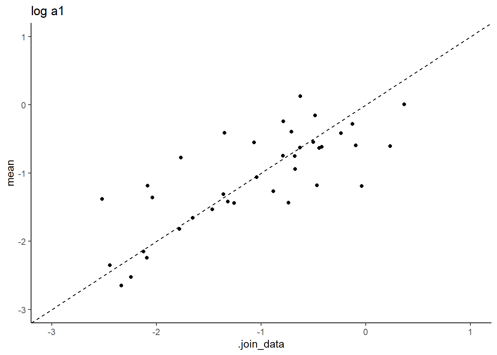

Simple occupancy STAN
1 Very simple occupancy model that controls for effort
We begin with a simple occupancy model where the probability of observing a presence (\(P\)) is a Bernoulli process described by \(w\) the probability of observation and \(p\) the probability of a true presence.
\[ \begin{align} Pr(y = 1) &= Bernoulli(wp) \\ w &= 1 - (1 - d)^{effort} \\\\ logit(p) &= \alpha \\ logit(d) &= \beta \\\\ \alpha &\sim \text{N}(-1, 0.5) \\ \beta &\sim \text{N}(0, 0.5) \\\\ effort &= \text{Nb observers} * \text{Nb hours} \end{align} \]
The curve of the effect of effort on probability of observation looks like this (here for d = 0.3)

The probability of observing a presence (\(y = 1\)) is the product of the probability of observing the specie and the probability that the specie is really there. The probability of not observing a presence is the probability of missing the species while it is present AND the probability that the specie is absent.
\[ y = \begin{cases} y = 1, & wp \\ y = 0, & (1-w)p + 1 - p \end{cases} \]
1.1 Simple Stan model for a static set of parameters
Parameters: p = 0.7 d = 0.3
We create a fake data set in which we consider the effect of the observation effort in the probability of really observing the specie. We consider an uniform distribution of the effort bounded between 1 and 25. In the real data set, the effort follow a normal distibution centered around 8 with min and max of (~0.5 ; ~ 20).
Here his an example of the data used to run the model :
$N
[1] 200
$y
[1] 1 1 0 1 0 1 1 1 1 1 1 0 1 0 1 0 0 1 1 0 0 1 1 1 1 0 1 1 1 1 1 1 1 1 0 1 0
[38] 1 1 1 1 1 1 1 1 1 1 0 0 1 0 1 1 0 1 1 0 1 1 1 1 1 0 0 1 1 1 1 1 0 1 0 1 1
[75] 0 0 0 0 0 0 0 1 0 1 1 1 1 1 0 1 0 0 1 0 1 1 1 0 1 1 1 1 1 1 1 1 1 0 1 1 1
[112] 0 0 1 1 1 1 0 1 1 1 1 1 1 0 1 0 1 1 1 1 1 1 1 0 0 1 1 1 1 0 1 1 1 1 1 1 0
[149] 1 1 0 1 1 1 0 1 1 1 0 0 1 1 1 0 0 1 0 0 1 1 1 0 0 1 0 1 1 1 1 1 1 0 1 0 1
[186] 1 0 1 1 1 0 1 1 1 1 1 1 1 0 1
$effort
[1] 18 11 9 11 17 13 7 19 4 11 15 18 8 4 6 3 4 14 7 19 4 8 19 16 23
[26] 12 18 21 21 2 20 6 7 23 2 10 6 17 19 18 3 8 19 6 3 7 7 2 20 14
[51] 14 24 25 15 18 17 22 9 16 11 12 25 19 8 13 13 4 22 19 11 8 2 15 5 3
[76] 4 2 1 22 15 2 5 24 24 13 22 13 8 10 18 18 4 12 25 20 2 6 18 23 22
[101] 5 6 14 12 10 22 12 4 16 17 11 19 4 25 5 6 18 1 21 16 7 11 18 7 23
[126] 6 10 13 19 18 18 10 3 7 15 3 19 3 19 9 20 15 18 24 12 19 23 10 18 19
[151] 24 22 22 13 17 12 24 21 24 3 11 13 5 2 5 23 3 20 22 24 23 23 17 12 18
[176] 11 25 18 16 7 7 8 10 5 13 19 3 17 24 23 20 16 2 21 12 3 5 15 3 22
$.join_data
$.join_data$prob_pres
[1] 0.7
$.join_data$prob_detect
[1] 0.31.1.1 Simulation results
From there we ran a Bayesian model (8 batches, 4 reps) and compare the distribution of the posteriors with the real parameters. First, we ask what percentage of the posterior don’t have the real parameters values in their 95% quantile.
# A tibble: 2 × 2
variable coverage
<chr> <dbl>
1 prob_detect 1
2 prob_pres 0.975Then we check the distribution of the mean of the posteriors


1.2 Simple Stan model for a varying set of parameters
Here, we ran each simulation with a different set of parameters. We aim to see if the model is robust for all the parameters value possible. The structure of the data is the same as for the static simulation.
The probability distributions of the parameters look like:
Detection
We expect the detection to be centered lower that 0.5 as most species are not systematly detected on each observation. It’s is less probable that as species has a probability of detection very close to zero (we would not see it often).

Presence
We test for mean value of presence as we expect that in a data set that ignore time, about half of the observations will fall outside the presence period of the species.

1.2.1 Simulation results
From there we ran a Bayesian model (16 batches, 4 reps) and compare the distribution of the posteriors with the real parameters. First, we ask what percentage of the posterior have the real parameters values in their 95% quantile.
# A tibble: 2 × 2
variable coverage
<chr> <dbl>
1 prob_detect 0.975
2 prob_pres 0.975Then we check the correlation with the mean of the posterior with the true parameter value on a 1:1 plot


2 Occupancy model that considers time
We build on the preceding model structure to add variation in the presence of the species with time. As we follow migrant species onsite, we expect to detect the arrival and departure of the species in the data. To account for that, we modify the \(P\) so that :
\[ \begin{align} p = \frac{1}{1 + e^{-a_1(t - b_1)}} * \frac{1}{1 + e^{a_2(t - b_2)}} \end{align} \]
Here is an exemple of the probability distribution obtained through time for given parameters value :
# Setting parameter values
a1 <- 1
a2 <- 0.2
b1 <- 125
b2 <- 235
2.1 Simple Stan model for static set of parameters
Parameters: d = 0.3 a1 = 1 a2 = 0.2 b1 = 160 b1 = 200
We create a fake data se with fixed parameters. We consider an uniform distribution of the observation dates between jj 130 and 240. In the real data set, the date follow a normal distribution centered around jj 180 (min 130 and max 240).
Here is an example of the data used to run the model:
$N
[1] 200
$y
[1] 0 1 1 1 0 0 1 0 0 1 0 0 1 1 0 0 1 0 1 0 0 0 1 0 0 0 0 0 1 0 1 1 0 0 0 1 0
[38] 0 1 0 0 1 0 1 1 0 1 0 0 0 0 0 0 1 0 0 0 1 1 0 0 0 1 0 0 0 0 0 0 1 1 0 1 0
[75] 0 0 0 1 0 0 0 1 0 1 1 0 0 0 0 1 1 0 0 0 1 1 0 1 0 0 0 1 0 0 0 0 1 0 0 0 0
[112] 0 0 0 0 1 0 0 0 0 0 0 1 0 1 1 1 0 1 0 1 1 1 0 1 0 0 1 0 1 0 0 1 0 1 1 1 0
[149] 0 0 1 0 0 0 0 0 0 1 1 0 1 1 0 1 0 1 0 0 0 0 0 1 0 0 0 1 1 0 1 0 1 1 0 0 1
[186] 0 0 0 0 0 0 1 0 0 1 0 0 0 0 0
$jj_date
[1] 130 190 207 167 199 156 198 232 209 174 194 219 182 167 237 221 206 138
[19] 201 191 202 131 187 138 196 233 207 234 189 160 195 176 141 229 229 167
[37] 226 135 194 141 197 170 218 165 166 211 188 150 218 152 157 194 137 169
[55] 153 235 235 185 194 143 238 149 165 189 226 133 200 232 146 173 200 135
[73] 174 138 225 146 148 199 235 153 157 180 157 193 200 188 192 149 132 187
[91] 211 204 239 211 189 201 233 190 145 210 136 168 195 169 154 143 165 226
[109] 148 197 211 200 140 145 136 164 232 152 231 157 226 216 166 136 192 174
[127] 199 131 186 235 189 189 180 230 168 132 138 197 211 187 144 147 177 228
[145] 176 165 185 187 221 142 159 237 200 153 216 222 164 187 184 142 158 162
[163] 195 190 143 172 191 170 148 215 224 189 134 162 229 209 190 201 173 231
[181] 160 178 130 161 162 158 136 154 152 204 141 178 223 131 176 151 137 159
[199] 148 142
$effort
[1] 22 8 8 17 13 11 19 24 18 6 12 10 13 6 10 7 21 14 7 1 24 15 12 7 24
[26] 21 12 16 15 22 14 11 4 14 5 8 14 7 14 1 3 15 16 2 6 13 11 14 22 9
[51] 14 18 8 8 9 24 11 18 20 10 18 19 22 5 10 11 22 18 17 6 16 2 14 19 5
[76] 23 17 21 18 11 9 17 14 4 5 2 18 13 25 12 7 24 22 7 8 13 3 7 2 3
[101] 9 17 2 3 9 15 8 11 25 10 16 11 11 23 19 24 19 4 5 11 13 9 24 2 3
[126] 18 16 15 12 15 23 10 18 11 18 24 6 15 23 13 17 5 10 25 17 19 9 18 6 17
[151] 24 23 10 23 1 22 2 13 25 16 21 13 13 24 13 20 20 1 13 9 9 18 23 1 23
[176] 8 24 3 25 24 17 16 19 16 20 9 13 5 7 15 10 23 3 6 8 5 15 21 6 7
$.join_data
$.join_data$prob_detect
[1] 0.3
$.join_data$log_a1
[1] 0
$.join_data$log_a2
[1] -1.609438
$.join_data$b1
[1] 160
$.join_data$b2
[1] 2002.1.1 Small detour on log scale
We change the general equation so that the \(a_1\) and \(a_2\) parameters are set on the log scale (so in the equation it becomes \(exp(a_1)\)). We do this because it makes the sampling easier. The \(a\) parameters is bounded between 0 and infinite, but starting at a value of 1, the slope of the curvature of the function tend toward a “step”. Thus, sampling the parameters on the log scale allows more “weight” on those values below 1, while still allowing the sampling of higher value.
Our priors become:
log_a1 ~ normal(1.5, 2)
log_a2 ~ normal(1.5, 2)
2.1.2 Simulation results
From there we ran a Bayesian model (8 batches, 5 reps) and compare the distribution of the posteriors with the real parameters. First, we ask what percentage of the posterior don’t have the real parameters values in their 95% quantile.
# A tibble: 5 × 2
variable coverage
<chr> <dbl>
1 b1 0.95
2 b2 0.95
3 log_a1 1
4 log_a2 0.875
5 prob_detect 0.975Then we check the distribution of the mean of the posteriors


2.2 Simple Stan model for varying set of parameters
Warning
I changed back to a uniform distribution of the arrival date and departure date to make sure to sample along a wider range of values.
Warning
In this simulation, we sample a different set of parameters each time we run the model. The arrival date \(b_1\) is normally distributed around jj 150 and the departure date \(b_1\) is distributed around 220. Both have an sd of 7.

The structure of the data and the model is the same than with the fixed parameter analysis.
2.2.1 Simulation results
We run ran a Bayesian model (x batches, y reps) and compared the distribution of the posteriors with the real parameters. As before, we first look at the percentage of the posterior that include the real parameter in their 95% quantile.
# A tibble: 5 × 2
variable coverage
<chr> <dbl>
1 b1 0.975
2 b2 0.85
3 log_a1 0.9
4 log_a2 0.925
5 prob_detect 0.975Then we check the correlation with the mean of the posterior and the true parameters value with a 1:1 plot.


3 Testing our occupancy model with adequate distributions
For now, we used mostly uniformly distributed data for effort and date. However, in the data set, the distributions of both of these variables are NOT uniform across the range. Thus, we will test our model with generated date with the appropriate distribution of these variable.
3.1 Effort
Here is the distribution of efforts in the data :

Min. 1st Qu. Median Mean 3rd Qu. Max. NA's
0.000 4.000 6.000 6.339 8.000 40.000 325 We will adapt our data-generating function to best approximate this distribution. We will use a normal distribution with a mean of 6 and a sd of 2.5. Such pdf looks like :

Once the sampling is changed, we ran the model and look at the fit between the mean of the posterior and the real value.


3.2 Date
Here is the distribution of dates in the data :

Min. 1st Qu. Median Mean 3rd Qu. Max.
132.0 168.0 178.0 179.6 189.0 232.0 As with the effort, we change the distribution of date in our data-generating function to best approximate the distribution in the data. We use a normal distribution with a mean of 180 and a sd of 15. The pdf looks like:

Once the sampling is changed, we ran the model and look at the fit between the mean of the posterior and the real value.




4 Testing our occupancy model with data
4.1 Data on Long-tailed Duck
Now we test our Bayesian framework on our real observation data. For this test, we select the data of the Long-tailed Duck as it is rather easy to observe, distributed almost everywhere on the island and should have an arrival and departure date within the observation period.
First, we illustrate the data :
4.2 Running the model, all years together
Then we run the model and extract the distribution of the posteriors :


We can extract the posterior for each chain

We can then extract the mean parameters and plot the predicted curve of presence :
variable mean median sd mad q5 q95 rhat ess_bulk
lp__ -1868.36 -1868.04 1.60 1.44 -1871.45 -1866.41 1.00 1700
prob_detect 0.53 0.53 0.05 0.05 0.45 0.62 1.00 2750
log_a1 -1.19 -1.19 0.08 0.08 -1.32 -1.05 1.00 2764
log_a2 -2.73 -2.72 0.07 0.07 -2.85 -2.61 1.00 2365
b1 162.20 162.20 0.36 0.36 161.62 162.78 1.00 3233
b2 202.70 202.62 1.28 1.27 200.72 204.90 1.00 2364
ess_tail
2302
2134
2562
2481
2722
2101
4.2.1 Posterior distribution of mean and predicted observations
Below, we manually extracted the coefficients from the model to plot the predicted model. However, we can modify the Stan code to extract the posterior directly into the Stan computation. It uses the notation “general quantities”, as shown below.
data {
int<lower=0> N;
array[N] int<lower=0, upper=1> y;
vector[N] effort;
vector[N] jj_date;
}
// The parameters accepted by the model. Our model
// accepts five parameters.
parameters {
real<lower=0, upper=1> prob_detect;
real log_a1;
real log_a2;
real<lower=1, upper=365> b1;
real<lower=1, upper=365> b2;
}
// The model to be estimated. We model the output
// 'y' to be normally distributed with mean 'mu'
// and standard deviation 'sigma'.
model {
prob_detect ~ beta(2, 5);
log_a1 ~ normal(-1, 1);
log_a2 ~ normal(-1, 1);
b1 ~ normal(150, 7);
b2 ~ normal(210, 7);
y ~ bernoulli((1 - (1 - prob_detect)^effort) .* (1 / (1 + exp(-exp(log_a1) .* (jj_date - b1))) .* (1 / (1 + exp(exp(log_a2) .* (jj_date - b2))))));
}
generated quantities {
vector[N] mu;
mu = (1 - (1 - prob_detect)^effort) .* (1 / (1 + exp(-exp(log_a1) .* (jj_date - b1))) .* (1 / (1 + exp(exp(log_a2) .* (jj_date - b2)))));
vector[N] obs_pred;
for (i in 1:N){
obs_pred[i] = bernoulli_rng(mu[i]);
}
}He we plot the densities of \(y\) in our data set versus the posterior. The model performs well as the observed \(y\) density falls well within the posterior of the model.

Try this again but make a smooth line for the average and plot against the julian date :

Not really surprising that the interval is bigger when the \(a_i\) is lower (more variation, more uncertainty).
5 Fixed effect occupancy model
The next step in our analysis is to slowly increase the complexity of the model. As we will want to estimate the parameters for all years and all species, we will need to transform our model into a hierarchical one (as we assume that for each species, the parameters have a certain distribution). Before doing that, we transform our model to account for fixed effect of year on our parameters (thus, they are estimated as factors, independently from each other).
5.1 One parameter varying with year
First, we have to simulate data. We are gonna start one parameter at the time and begin with \(b_1\). We simulate 200 observations per year for 5 years. We also add the variable “year”. The data looks like this :
List of 10
$ N : num 1200
$ N_Y : num 6
$ y : int [1:1200] 0 0 0 1 1 0 0 1 0 1 ...
$ year : Factor w/ 6 levels "2010","2011",..: 1 1 1 1 1 1 1 1 1 1 ...
$ jj_date : num [1:1200] 149 153 145 175 162 148 132 180 202 168 ...
$ effort : num [1:1200] 11 7 15 19 19 7 12 7 16 12 ...
$ n_new : num 100
$ newdate : num [1:600] 120 121 123 124 125 ...
$ newyear : int [1:600] 1 1 1 1 1 1 1 1 1 1 ...
$ .join_data:List of 5
..$ prob_detect: num 0.3
..$ log_a1 : num 0
..$ log_a2 : num -1.61
..$ b1 : num [1:6] 158 141 143 141 154 157
..$ b2 : num 200We modify our Stan code so that a \(b_1\) parameter is estimated for each year
data {
int<lower = 1> N; // Number of observation
int<lower = 1> N_Y; // Number of years
array[N] int<lower = 0, upper = 1> y; // Arrey of our observation (response)
array[N] int<lower = 1, upper = N_Y> year; // Indices of years
vector[N] effort; // Vector of effort (explanatory variable)
vector[N] jj_date; // Vector of observation data (explanatory variable)
int<lower=0> n_new;
vector[n_new*N_Y] newdate;
array[n_new*N_Y] int<lower=1, upper = N_Y> newyear;
}
// The parameters accepted by the model. Our model
// accepts five parameters.
parameters {
real<lower=0, upper=1> prob_detect;
real log_a1;
real log_a2;
real<lower=1, upper=365> b2;
vector<lower=1, upper=365>[N_Y] b1; // Value of B
}
// The model to be estimated. We model the output
// 'y' to be normally distributed with mean 'mu'
// and standard deviation 'sigma'.
model {
prob_detect ~ beta(2, 5);
log_a1 ~ normal(-1, 1);
log_a2 ~ normal(-1, 1);
b1 ~ normal(150, 7);
b2 ~ normal(210, 7);
y ~ bernoulli((1 - (1 - prob_detect)^effort) .* (1 / (1 + exp(-exp(log_a1) .* (jj_date - b1[year]))) .* (1 / (1 + exp(exp(log_a2) .* (jj_date - b2))))));
}
generated quantities {
vector[n_new*N_Y] mu_line = (1 / (1 + exp(-exp(log_a1) .* (newdate - b1[newyear])))) .* (1 / (1 + exp(exp(log_a2) .* (newdate - b2))));
}- For the code to work, I had to transform the ‘year’ variable into a factor (else had an error message about the fact that the variable was outside the bounded array)
- I can’t pass the b1 vector in the .join data as the function demands that the length of the variable in .join to be the same (1 in this case)
Inspect the distribution of our parameters posteriors
variable | mean | median | sd | mad | q5 | q95 | rhat | ess_bulk | ess_tail |
|---|---|---|---|---|---|---|---|---|---|
prob_detect | 0.299834026 | 0.297677500 | 0.02725286 | 0.02664380 | 0.2585587 | 0.3482655 | 1.0019313 | 6,122.998 | 3,206.624 |
log_a1 | 0.002605856 | -0.000411821 | 0.19715856 | 0.19709266 | -0.3131213 | 0.3293252 | 1.0001854 | 5,601.178 | 3,373.652 |
log_a2 | -1.690406467 | -1.691125000 | 0.08745857 | 0.08708792 | -1.8306725 | -1.5478860 | 0.9996022 | 6,597.710 | 3,361.667 |
b1[1] | 157.230841000 | 157.214000000 | 0.89737391 | 0.86583840 | 155.7590000 | 158.7250500 | 1.0019239 | 6,229.541 | 2,685.712 |
b1[2] | 140.169109750 | 140.185000000 | 0.90019741 | 0.90364470 | 138.6558000 | 141.6210500 | 1.0002933 | 9,291.035 | 3,216.607 |
b1[3] | 143.328986250 | 143.316500000 | 0.79916584 | 0.78800190 | 142.0290000 | 144.6630000 | 1.0002592 | 8,526.666 | 2,705.563 |
b1[4] | 141.702337500 | 141.754500000 | 0.95981506 | 0.90957510 | 140.0400000 | 143.1761000 | 1.0018209 | 7,607.542 | 2,965.846 |
b1[5] | 153.655711750 | 153.683500000 | 0.71887849 | 0.71387190 | 152.4339000 | 154.8110000 | 1.0005486 | 9,222.209 | 3,284.845 |
b1[6] | 156.389828250 | 156.383500000 | 0.75195180 | 0.74352390 | 155.1567500 | 157.6254500 | 0.9999397 | 7,463.897 | 2,960.429 |
True b1 values are
year b1
1 2010 158
2 2011 141
3 2012 143
4 2013 141
5 2014 154
6 2015 1575.1.1 Visualize
b1_fixed_mod_mcmc_b1_fixed |>
tidybayes::gather_rvars(mu_line[i]) |>
dplyr::bind_cols(as.data.frame(fake_data_b1[c("newdate", "newyear")])) |>
ggplot(aes(x = newdate, dist = .value, group = newyear)) +
tidybayes::stat_lineribbon() +
theme_classic() +
facet_wrap(~ newyear)
It is not really surprizing that the model still work as we just added data and different values of \(b1\) for those slices of data. We could do this for all parameters, but it will end up with the same results that we had in our previous analysis with all parameters.
The next step is to test for all parameters.
5.2 Two b parameter varying with year
variable | mean | median | sd | mad | q5 | q95 | rhat | ess_bulk | ess_tail |
|---|---|---|---|---|---|---|---|---|---|
prob_detect | 0.3106336 | 0.3096675 | 0.02735239 | 0.02730134 | 0.2678967 | 0.3581431 | 1.0006657 | 6,730.783 | 3,008.897 |
log_a1 | -0.1669356 | -0.1697100 | 0.19214120 | 0.19064272 | -0.4763317 | 0.1500964 | 1.0031254 | 2,986.662 | 2,182.343 |
log_a2 | -1.6585096 | -1.6570000 | 0.08481543 | 0.08675434 | -1.7961195 | -1.5191875 | 1.0003455 | 7,614.996 | 3,007.475 |
b1[1] | 159.0162470 | 159.0110000 | 0.80621485 | 0.77095200 | 157.6907500 | 160.3371000 | 1.0000823 | 6,927.016 | 3,035.178 |
b1[2] | 140.3860420 | 140.3900000 | 1.09724859 | 1.11862170 | 138.5739500 | 142.1194000 | 1.0016329 | 7,382.187 | 2,802.121 |
b1[3] | 156.0189052 | 156.0150000 | 0.83320459 | 0.82729080 | 154.6618500 | 157.3921000 | 1.0014933 | 8,060.079 | 3,013.986 |
b1[4] | 149.3214512 | 149.3385000 | 1.07030679 | 1.07562630 | 147.5359500 | 151.0050500 | 1.0006235 | 7,516.054 | 2,264.839 |
b1[5] | 141.2256718 | 141.2375000 | 0.78227402 | 0.78503670 | 139.9040000 | 142.4800500 | 1.0004287 | 7,262.182 | 3,295.572 |
b1[6] | 159.6117205 | 159.6430000 | 0.99465698 | 0.95627700 | 157.9759500 | 161.2052500 | 1.0001162 | 7,245.732 | 2,678.752 |
b2[1] | 192.5608978 | 192.5365000 | 1.82841346 | 1.81915020 | 189.6269500 | 195.6520500 | 0.9998271 | 8,991.054 | 3,091.570 |
b2[2] | 202.9271410 | 202.9065000 | 1.81886543 | 1.77837870 | 199.9927500 | 205.9990000 | 1.0009339 | 5,299.732 | 3,103.407 |
b2[3] | 190.8706447 | 190.8495000 | 1.86722431 | 1.89179760 | 187.8944000 | 193.9694500 | 1.0004212 | 7,321.575 | 2,831.887 |
b2[4] | 208.7949725 | 208.7825000 | 2.05042313 | 1.99335570 | 205.4887500 | 212.2072500 | 1.0016690 | 7,341.042 | 2,696.226 |
b2[5] | 192.7949060 | 192.7875000 | 1.81760891 | 1.87326510 | 189.8636500 | 195.7431000 | 1.0010792 | 6,928.791 | 2,872.140 |
b2[6] | 211.0860202 | 211.0620000 | 1.72199783 | 1.70350740 | 208.3269000 | 214.0161000 | 1.0001614 | 4,502.900 | 2,541.726 |
b1_b2_fixed_mod_mcmc_b1_b2_fixed |>
tidybayes::gather_rvars(mu_line[i]) |>
dplyr::bind_cols(as.data.frame(fake_data_b1_b2[c("newdate", "newyear")])) |>
ggplot(aes(x = newdate, dist = .value, group = newyear)) +
tidybayes::stat_lineribbon() +
theme_classic() +
facet_wrap(~ newyear)
5.3 One \(a\) parameter varying with year
variable | mean | median | sd | mad | q5 | q95 | rhat | ess_bulk | ess_tail |
|---|---|---|---|---|---|---|---|---|---|
prob_detect | 0.29986100 | 0.29578300 | 0.04263055 | 0.04114215 | 0.2366270 | 0.3768839 | 0.9997232 | 4,773.806 | 3,131.547 |
log_a1[1] | -1.84986184 | -1.85418000 | 0.23670650 | 0.23380602 | -2.2318620 | -1.4550490 | 1.0016574 | 6,977.240 | 2,808.211 |
log_a1[2] | -1.74427492 | -1.74509000 | 0.23828714 | 0.23508847 | -2.1308485 | -1.3471680 | 0.9998982 | 8,040.273 | 2,949.057 |
log_a1[3] | -1.76457310 | -1.76498000 | 0.23815611 | 0.23582977 | -2.1660675 | -1.3813555 | 1.0030091 | 7,143.813 | 2,545.611 |
log_a1[4] | -1.00274350 | -1.00872500 | 0.30268742 | 0.30208346 | -1.4929225 | -0.5036645 | 1.0003211 | 8,704.341 | 2,634.153 |
log_a1[5] | 0.02253255 | 0.01639505 | 0.45063218 | 0.45421386 | -0.7047591 | 0.7719430 | 1.0002910 | 6,504.856 | 3,188.491 |
log_a1[6] | -0.21924735 | -0.26136850 | 0.46731519 | 0.45507658 | -0.9178923 | 0.6303873 | 1.0006769 | 5,967.246 | 3,178.211 |
log_a2 | -1.59957498 | -1.59991500 | 0.09935374 | 0.09955659 | -1.7615205 | -1.4307110 | 0.9999608 | 6,365.349 | 3,331.278 |
b1 | 160.58527000 | 160.57500000 | 0.51215061 | 0.49815360 | 159.7659500 | 161.4510500 | 1.0002812 | 5,683.988 | 3,055.082 |
b2 | 200.28947975 | 200.28700000 | 0.77317219 | 0.76798680 | 199.0129500 | 201.5700500 | 1.0003757 | 6,652.696 | 3,434.345 |
a1_fixed_mod_mcmc_a1_fixed |>
tidybayes::gather_rvars(mu_line[i]) |>
dplyr::bind_cols(as.data.frame(fake_data_b1_b2[c("newdate", "newyear")])) |>
ggplot(aes(x = newdate, dist = .value, group = newyear)) +
tidybayes::stat_lineribbon() +
theme_classic() +
facet_wrap(~ newyear)
5.4 Two \(a\) parameter varying with year

variable | mean | median | sd | mad | q5 | q95 | rhat | ess_bulk | ess_tail |
|---|---|---|---|---|---|---|---|---|---|
prob_detect | 0.5902700 | 0.6380035 | 0.2697723 | 0.3329252 | 0.2909570 | 0.8625021 | 2.192910 | 5.114335 | 11.34604 |
log_a1[1] | -1.0998139 | -0.9255355 | 0.2800435 | 0.1203879 | -1.6274065 | -0.8443009 | 2.008059 | 6.589257 | 48.72431 |
log_a1[2] | -1.1916536 | -1.3043650 | 1.1744603 | 1.1959689 | -2.3981330 | 0.7333870 | 3.007255 | 4.979475 | 11.33779 |
log_a1[3] | 0.2367942 | 0.6273415 | 0.9572280 | 0.6108067 | -1.2365700 | 1.4487945 | 1.576775 | 6.840039 | 20.72231 |
log_a1[4] | -1.1206954 | -1.2931700 | 0.3570928 | 0.2886548 | -1.6565145 | -0.6161349 | 2.371087 | 7.218764 | 15.79118 |
log_a1[5] | -0.3572436 | -0.7428160 | 0.5798611 | 0.2869394 | -0.9362700 | 0.7190486 | 2.097790 | 5.316508 | 14.21248 |
log_a1[6] | -0.9429737 | -0.8712070 | 0.6924943 | 0.9742950 | -1.7774995 | 0.1234393 | 2.240391 | 5.056570 | 15.64757 |
log_a2[1] | -0.5602474 | -0.4080340 | 0.6980159 | 0.5661135 | -1.6056300 | 0.4868203 | 2.236191 | 6.142958 | 14.79998 |
log_a2[2] | 0.3545471 | 0.3444875 | 0.4833472 | 0.6277816 | -0.5433275 | 0.8979052 | 1.546720 | 12.667602 | 142.79430 |
log_a2[3] | -0.9039190 | -1.0747355 | 1.5007238 | 1.6567010 | -2.4456855 | 1.4581500 | 2.589596 | 5.214223 | 50.06185 |
log_a2[4] | -0.6803173 | -1.1443850 | 0.8273885 | 0.2367401 | -1.4468505 | 0.7233440 | 2.103188 | 7.077042 | 25.51376 |
log_a2[5] | -0.7538498 | -0.9296960 | 0.6103556 | 0.6133872 | -1.3440710 | 0.1851411 | 1.893943 | 5.616079 | 11.21038 |
log_a2[6] | -1.6444815 | -1.3930150 | 0.6107992 | 0.6272021 | -2.4762420 | -0.9702910 | 2.190070 | 5.129856 | 28.33995 |
b1 | 177.9084810 | 171.1670000 | 30.4380920 | 32.3518146 | 148.8109500 | 221.3570000 | 3.001142 | 4.984090 | 11.51250 |
b2 | 239.7819372 | 222.4320000 | 32.8927267 | 4.4863476 | 218.7470000 | 296.6920000 | 2.939075 | 5.013839 | 20.94547 |
a1_a2_fixed_mod_mcmc_a1_a2_fixed |>
tidybayes::gather_rvars(mu_line[i]) |>
dplyr::bind_cols(as.data.frame(fake_data_b1_b2[c("newdate", "newyear")])) |>
ggplot(aes(x = newdate, dist = .value, group = newyear)) +
tidybayes::stat_lineribbon() +
theme_classic() +
facet_wrap(~ newyear)
5.5 All parameters
As for before, we start to generate fake data. For each year, we will make the following parameters vary : \(log_a1\), \(log_a2\), \(b1\) and \(b2\). The only parameter that we keep constant is the probability of detection, as we assume that it should no vary, for one species, between years.
List of 10
$ N : num 1200
$ N_Y : num 6
$ y : int [1:1200] 0 1 0 0 0 1 0 0 1 1 ...
$ year : Factor w/ 6 levels "2010","2011",..: 1 1 1 1 1 1 1 1 1 1 ...
$ jj_date : num [1:1200] 167 221 161 136 229 190 133 178 166 139 ...
$ effort : num [1:1200] 11 14 13 22 15 15 23 2 3 10 ...
$ n_new : num 100
$ newdate : num [1:600] 120 121 123 124 125 ...
$ newyear : int [1:600] 1 1 1 1 1 1 1 1 1 1 ...
$ .join_data:List of 5
..$ prob_detect: num 0.3
..$ log_a1 : num [1:6] -3.029 -2.901 0.369 -0.569 -3.646 ...
..$ log_a2 : num [1:6] -2.46 -2.319 -0.724 -2.33 -2.342 ...
..$ b1 : num [1:6] 158 153 149 140 156 140
..$ b2 : num [1:6] 207 200 204 200 192 195data {
int<lower = 1> N; // Number of observation
int<lower = 1> N_Y; // Number of years
array[N] int<lower = 0, upper = 1> y; // Arrey of our observation (response)
array[N] int<lower = 1, upper = N_Y> year; // Indices of years
vector[N] effort; // Vector of effort (explanatory variable)
vector[N] jj_date; // Vector of observation data (explanatory variable)
int<lower=0> n_new;
vector[n_new*N_Y] newdate;
array[n_new*N_Y] int<lower=1, upper = N_Y> newyear;
}
// The parameters accepted by the model. Our model
// accepts five parameters.
parameters {
real<lower=0, upper=1> prob_detect;
vector[N_Y] log_a1; // Value of log_a1
vector[N_Y] log_a2; // Value of log_a2
vector<lower=1, upper=365>[N_Y] b1; // Value of B1
vector<lower=1, upper=365>[N_Y] b2; // Value of B1
}
// The model to be estimated. We model the output
// 'y' to be normally distributed with mean 'mu'
// and standard deviation 'sigma'.
model {
prob_detect ~ beta(2, 5);
log_a1 ~ normal(-1, 1);
log_a2 ~ normal(-1, 1);
b1 ~ normal(150, 7);
b2 ~ normal(200, 7);
y ~ bernoulli((1 - (1 - prob_detect)^effort) .* (1 / (1 + exp(-exp(log_a1[year]) .* (jj_date - b1[year]))) .* (1 / (1 + exp(exp(log_a2[year]) .* (jj_date - b2[year]))))));
}
generated quantities {
vector[n_new*N_Y] mu_line = (1 / (1 + exp(-exp(log_a1[newyear]) .* (newdate - b1[newyear])))) .* (1 / (1 + exp(exp(log_a2[newyear]) .* (newdate - b2[newyear]))));
}variable | mean | median | sd | mad | q5 | q95 | rhat | ess_bulk | ess_tail |
|---|---|---|---|---|---|---|---|---|---|
prob_detect | 0.4397785 | 0.30480100 | 0.2556317 | 0.04869229 | 0.2500136 | 0.8800990 | 1.592460 | 6.781949 | 16.94148 |
log_a1[1] | -2.0776053 | -3.04399000 | 1.9944979 | 0.53613040 | -3.7645250 | 1.3358500 | 1.575760 | 6.829418 | 11.45626 |
log_a1[2] | -2.3941963 | -2.66646500 | 0.8221112 | 0.58377375 | -3.3886030 | -1.0876000 | 1.594806 | 6.733915 | 11.52237 |
log_a1[3] | 0.6350416 | 0.78420900 | 0.4501691 | 0.36685603 | -0.1363446 | 1.3612905 | 1.500330 | 158.528504 | 1,949.39702 |
log_a1[4] | 0.2676935 | 0.02807305 | 0.8448920 | 0.81502681 | -0.8645624 | 1.4872305 | 1.474613 | 7.573606 | 17.12286 |
log_a1[5] | -2.5387311 | -3.38068000 | 1.9084868 | 0.72000986 | -4.3614615 | 0.6930211 | 1.593351 | 6.721506 | 11.41595 |
log_a1[6] | -1.5667839 | -1.51288500 | 0.2656188 | 0.21695627 | -2.0519180 | -1.2297660 | 1.100482 | 25.399957 | 2,450.47561 |
log_a2[1] | -1.5351350 | -2.32256500 | 1.5920012 | 0.42312663 | -2.8604465 | 1.1915310 | 1.578691 | 6.816583 | 11.10726 |
log_a2[2] | -1.3310163 | -2.16410500 | 1.6732126 | 0.47600356 | -2.7132075 | 1.5324005 | 1.528417 | 7.154652 | 23.33269 |
log_a2[3] | -0.4001304 | -0.45088550 | 0.3798063 | 0.43470203 | -0.8410642 | 0.2830261 | 1.176933 | 15.353852 | 2,518.89617 |
log_a2[4] | -1.4433585 | -2.35057500 | 1.6985152 | 0.24009966 | -2.6574035 | 1.4904205 | 1.591540 | 6.743545 | 11.35780 |
log_a2[5] | -1.7803301 | -2.34412500 | 1.2054415 | 0.49340928 | -2.9026665 | 0.2497931 | 1.529072 | 7.214257 | 47.46890 |
log_a2[6] | -1.0087718 | -1.06563500 | 0.2551528 | 0.19617022 | -1.3327200 | -0.5327581 | 1.096615 | 26.798822 | 2,251.56958 |
b1[1] | 154.8590827 | 151.13100000 | 10.8888775 | 7.26251610 | 141.8657500 | 172.3500000 | 1.560965 | 6.933800 | 25.21019 |
b1[2] | 189.5930498 | 153.42500000 | 65.9227248 | 6.47599680 | 145.3552500 | 303.6240000 | 1.586558 | 6.803984 | 13.88760 |
b1[3] | 140.6569930 | 148.76700000 | 14.4006482 | 0.79393230 | 115.7010000 | 149.7430500 | 1.553165 | 7.014276 | 16.55506 |
b1[4] | 144.3723525 | 139.81300000 | 8.8704822 | 1.82285670 | 137.4958000 | 159.9460500 | 1.593854 | 6.722913 | 11.34972 |
b1[5] | 183.6505645 | 156.79150000 | 51.1417842 | 9.10538790 | 145.5594500 | 271.9420000 | 1.596673 | 6.715786 | 11.35534 |
b1[6] | 146.1241618 | 143.27050000 | 6.4783444 | 2.80063140 | 139.7675500 | 157.1000000 | 1.594299 | 6.729788 | 12.16179 |
b2[1] | 206.3886040 | 205.78250000 | 5.3820307 | 6.07124700 | 197.8043500 | 213.5350000 | 1.463780 | 7.743335 | 35.68610 |
b2[2] | 224.0791448 | 205.16400000 | 36.2818531 | 6.33218460 | 197.0723000 | 286.6480000 | 1.558717 | 7.000896 | 12.81423 |
b2[3] | 171.7263059 | 203.74500000 | 56.1196639 | 1.46406750 | 74.4964950 | 205.4850500 | 1.592109 | 6.798742 | 14.15972 |
b2[4] | 195.4687025 | 196.74100000 | 4.7043099 | 3.97410930 | 188.2690000 | 201.6608000 | 1.557686 | 6.976690 | 17.23129 |
b2[5] | 224.3939108 | 195.87350000 | 53.5213093 | 8.15355870 | 185.8005500 | 316.7660000 | 1.559377 | 6.970944 | 13.65347 |
b2[6] | 215.3574000 | 195.49050000 | 35.3471768 | 2.08082910 | 193.0228500 | 276.5590000 | 1.557962 | 7.043610 | 17.18504 |
all_fixed_mod_mcmc_all_fixed |>
tidybayes::gather_rvars(mu_line[i]) |>
dplyr::bind_cols(as.data.frame(fake_data_additive[c("newdate", "newyear")])) |>
ggplot(aes(x = newdate, dist = .value, group = newyear)) +
tidybayes::stat_lineribbon() +
theme_classic() +
facet_wrap(~ newyear)
** TODO **
- Understand why the model with presence ~ time does not seems to fit very well
- Run the model with presence parameters varying at each simulation
- Build the 1:1 graph for the mean of the posterior vs real parameters
- Run a model for the Long-tailed Duck data all year combined
- Illustrate the model like in this article
- Adjust the model for a logit form
- Simulate and run an additive model in Stan
- Simulate and run a model with all the relevant parameter varying with year
- Run a model for the Long-tailed Duck with parameter varying each year
- Simulate data with a hierarchical structure for one parameters (ex: b1)
- Run a hierarchical model for one parameters